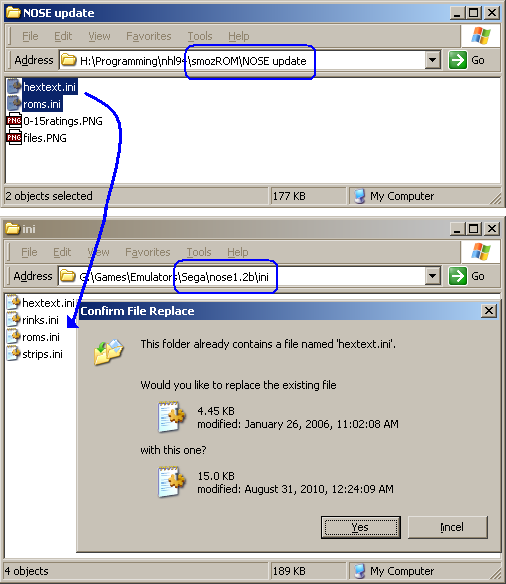

NOSE Update
The 0-15 ratings hack and the base weight for different eras hack both
require a couple NOSE files to be updated so it can properly display
the new ratings and weights.This update also includes the 30-team NHLPA '93 update.

Player ratings go from 0-F (F=15)
How to Install the Update
- From the 'smozROM'
program directory, go into the 'NOSE
Update' directory.
- Copy the two files, 'hextext.ini' and 'roms.ini'
- Paste these files into the 'ini' directory of NOSE, overwriting the old ones.
- If NOSE was open, you need to close it and re-run it for the changes to take effect.
Re-Rating Players
Note that when you upgrade a ROM to 0-15 ratings, the players will still be rated 0-6, so you'll have to re-rate them in NOSE.I map them like so:
0 => 0
1 => 3 (instead of 2.5)
2 => 5
3 => 8 (instead of 7.5)
4 => 10
5 => 12 (instead of 12.5)
6 => 15
Also, check out the player weights in NOSE if you made a retro or modern ROM.
Crazy Overall Rating
There is one 'small' issue, though: I can not update the Overall rating formula in NOSE, so players end up with really high Overall ratings. For example, in the image above, Brett Hull is rated 203. In the ROM, the rating will be correct, though.To translate between NOSE ratings and ROM ratings, divide by 2.5.
Brett Hull: 203/2.5 = 81.2.
Mario Lemieux, when translated to 0-15 ratings, is rated 250 in NOSE. 250/2.5 = 100.
Equivalent ratings:
(0-15 => 0-6)
250 => 100
225 => 90
200 => 80
175 => 70
150 => 60
125 => 50
100 => 45*
75 => 40*
50 => 35*
25** => 25*
* In the ROM, ratings under 50 are on a different scale, one that decreases half as fast as normal.
** In NOSE, ratings under 50 are also on the different scale!